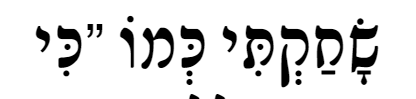

Hebrew("בְּרֵאשִׁ֖ית")
A python package with methods to handle the complexities of Hebrew text, calculate Gematria, and more.


Documentation: https://hebrew.aviperl.me/
Repository: https://github.com/avi-perl/hebrew
Installationל
$ pip install hebrew
Exampleל
Hebrew assists in working with Hebrew text by providing methods to handle the text according to user-perceived
characteristics. Additionally, methods for common Hebrew text processing are provided.
from hebrew import Hebrew
from hebrew.chars import HebrewChar, ALEPH
hs = Hebrew('בְּרֵאשִׁ֖ית')
print(list(hs.graphemes)) # ['בְּ', 'רֵ', 'א', 'שִׁ֖', 'י', 'ת']
print(hs.text_only()) # בראשית
print(ALEPH) # HebrewChar(char='א', name='Aleph', hebrew_name='אָלֶף', name_alts=['Alef'], hebrew_name_alts=None, final_letter=False)
print(HebrewChar.search('bet')) # HebrewChar(char='בּ', name='Bet', hebrew_name='בֵּית', name_alts=None, hebrew_name_alts=None, final_letter=False)
Gematriaל
The Hebrew class includes a gematria function that can return a value for 23 different variations of Gematria!
from hebrew import Hebrew
from hebrew import GematriaTypes
hs = Hebrew(':מוֹדֶה אֲנִי לְפָנֶֽיךָ מֶֽלֶךְ חַי וְקַיָּם שֶׁהֶחֱזַֽרְתָּ בִּי נִשְׁמָתִי בְּחֶמְלָה, רַבָּה אֱמוּנָתֶֽךָ')
assert hs.gematria() == 3111
assert hs.gematria(GematriaTypes.MISPAR_GADOL) == 5111
Messy inputs, such as strings with english text mixed in, is supported. However, do be careful to work with sanitized strings as much as possible.
from hebrew import Hebrew
hs1 = Hebrew(
'''
Text: ":מוֹדֶה אֲנִי לְפָנֶֽיךָ מֶֽלֶךְ חַי וְקַיָּם שֶׁהֶחֱזַֽרְתָּ בִּי נִשְׁמָתִי בְּחֶמְלָה, רַבָּה אֱמוּנָתֶֽךָ"
Translation: "I give thanks to You living and everlasting King for You have restored my soul with mercy. Great is Your faithfulness."
'''
)
hs2 = Hebrew(':מוֹדֶה אֲנִי לְפָנֶֽיךָ מֶֽלֶךְ חַי וְקַיָּם שֶׁהֶחֱזַֽרְתָּ בִּי נִשְׁמָתִי בְּחֶמְלָה, רַבָּה אֱמוּנָתֶֽךָ')
assert hs1.gematria() == hs2.gematria() # 2701
Major kudos goes to TorahCalc whose calculator and explanations were critical to the development of this feature.
Numerical Conversionsל
You can create a Hebrew object that represents a number using the from_number method. This is handy for displaying numbers in Hebrew form.
from hebrew import Hebrew
hs1 = Hebrew.from_number(2)
assert hs1.string == "ב׳"
# Add an apostrophe instead of the unicode geresh
hs2 = Hebrew.from_number(2, geresh=False)
assert hs2.string == "ב'"
# Do not add punctuation
hs2 = Hebrew.from_number(2, punctuate=False)
assert hs2.string == 'ב'
Character Normalizationל
Hidden among hebrew text can be special characters that are visually identical humans, but are made up of different unicode characters. However, this can cause issues with presentation when there is no support for these characters.

In this case, the first letter is made up of 2 unicode characters, sin with a dot and qamatz. The issue here is the sin. By normalizing the sin with a dot to 2 unicode characters, ש and the dot, the display will look right!

To normalize content, use the Hebrew.normalize function:
from hebrew import Hebrew
hs = Hebrew('שָׂחַקְתִּי כְּמוֹ')
assert len(hs.string) == 14
assert len(hs.normalize().string) == 18
Normalizing Yiddishל
By default, special yiddish characters such as ײ (double Yod) are not normalized. However, ײַ (double Yod with a Patah) will be converted to ײַ.
To fully "normalize" yiddish characters, pass True to normalize.
Grapheme Charactersל
Hebrew text comes in different forms, depending on the context. Hebrew text may appear with Niqqudot "a system of diacritical signs used to represent vowels or distinguish between alternative pronunciations of letters of the Hebrew alphabet". ^1 Additionally, Hebrew text may appear with extensive punctuation characters that connect words, separate them, and cantillation marks "used as a guide for chanting the text, either from the printed text or, in the case of the public reading of the Torah" ^2.
Because of the above, from the perspective of a hebrew reader, the following 3 words are the same:
- בְּרֵאשִׁ֖ית
- בְּרֵאשִׁית
- בראשית
However, as a unicode string, they are entirely different because of the additional characters.
assert len("בְּרֵאשִׁ֖ית") == 12
assert len("בְּרֵאשִׁית") == 11
assert len("בראשית") == 6
This impacts the user is a number of other ways. For example, if I want to get the root of this hebrew word using a slice:
Expected: רֵאשִׁ֖ית
he = "בְּרֵאשִׁ֖ית"
assert he[-5:] == 'ִׁ֖ית'
The solution to this is to handle the unicode string as a list of grapheme^3 characters, where each letter and its accompanying characters are treated as a single unit.
Working with Grapheme Charactersל
Using the grapheme library for python, we can work with the grapheme characters as units. This allows us to get the right number of characters, slice the string correctly, and more.
import grapheme
assert grapheme.length("בְּרֵאשִׁ֖ית") == 6
assert grapheme.slice("בְּרֵאשִׁ֖ית", start=1, end=6) == 'רֵאשִׁ֖ית'
This library includes 2 classes. GraphemeString is a class that supports all the functions made available by grapheme.
The 2nd class Hebrew subclasses GraphemeString and adds methods for handling Hebrew text. This allows us to
interact with the text like so:
from hebrew import Hebrew
v2 = Hebrew('מוֹדֶה אֲנִי לְפָנֶֽיךָ')
print(v2.no_taamim())
assert v2.no_taamim().string == 'מוֹדֶה אֲנִי לְפָנֶיךָ'
assert v2.text_only().string == 'מודה אני לפניך'
assert v2.length == 14
assert v2.words() == [Hebrew('מוֹדֶה'), Hebrew('אֲנִי'), Hebrew('לְפָנֶֽיךָ')]
The text in these examples and used in testing were sourced from Sefaria.
hebrew.chars and Character Constantsל
hebrew.Chars contains constants for every letter as well as lists by character category's.
Each value is an instance of a class that represents a character in the Hebrew character set with relevant properties.
Since this library seeks to support the use of the Hebrew language in the way it is used, characters such as "בּ" can be
located (BET) even though, strictly speaking, "בּ" is not part of the hebrew alphabet; it is a Hebrew letter plus a dot.
from hebrew.chars import FINAL_LETTERS, YIDDISH_CHARS, TSADI
print(TSADI) # HebrewChar(char='צ', name='Tsadi', hebrew_name='צַדִי', name_alts=['Tzadik'], hebrew_name_alts=['צדיק'], final_letter=False)
assert {c.name: c.char for c in FINAL_LETTERS} == {'Chaf Sofit': 'ך', 'Mem Sofit': 'ם', 'Nun Sofit': 'ן', 'Fe Sofit': 'ף', 'Tsadi Sofit': 'ץ'}
assert [c.char for c in YIDDISH_CHARS] == ['ײ', 'װ', 'ױ']
A letter can be retrieved using the CHARS dict; A dict of all instances of all supported Char types where the key is
the char and the value is an instance of BaseHebrewChar.
from hebrew.chars import CHARS
print(CHARS.get('בּ')) # HebrewChar(char='בּ', name='Bet', hebrew_name='בֵּית', name_alts=None, hebrew_name_alts=None, final_letter=False)
Search is also supported so that letters can be retrieved by their name.
from hebrew.chars import HebrewChar
print(HebrewChar.search('bet')) # HebrewChar(char='בּ', name='Bet', hebrew_name='בֵּית', name_alts=None, hebrew_name_alts=None, final_letter=False)
Contributingל
Contributions in the form of pull requests are very welcome! I'm sure many more helpful methods related to hebrew text could be helpful. More information and instructions for contributing can be found here.